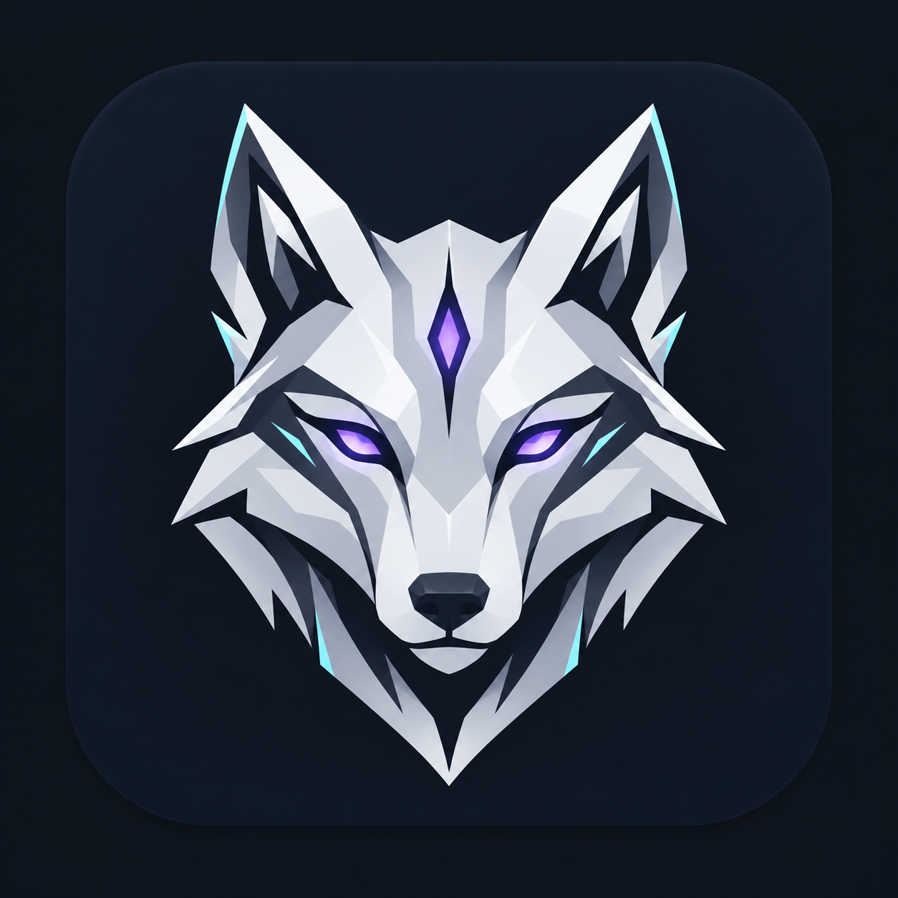
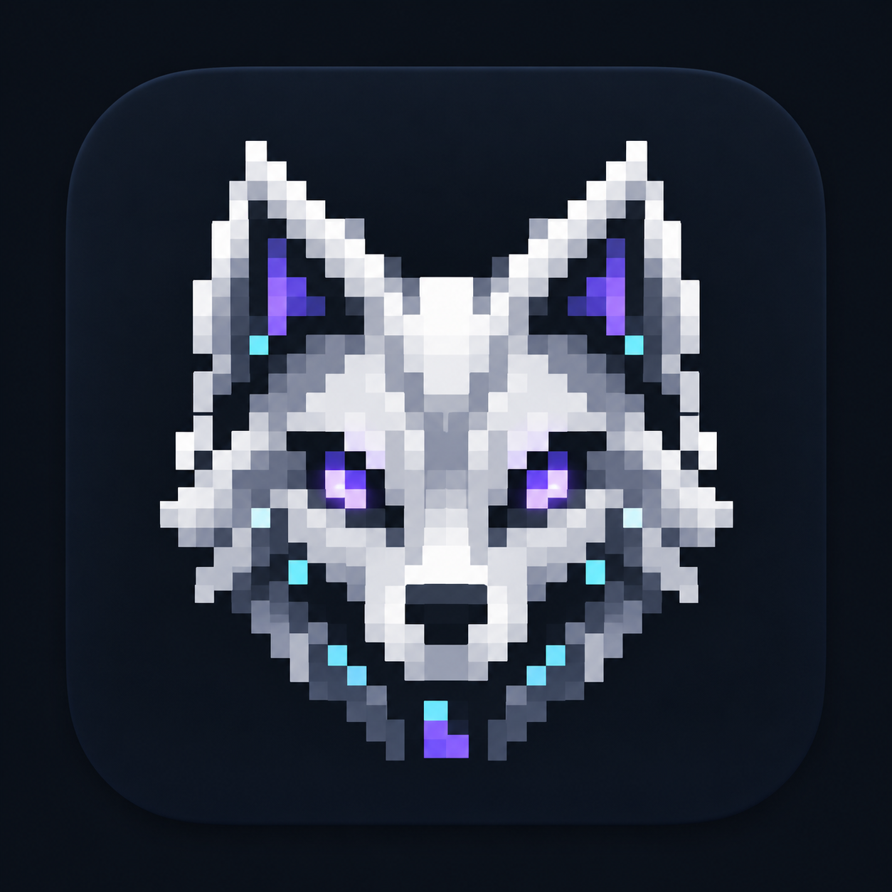
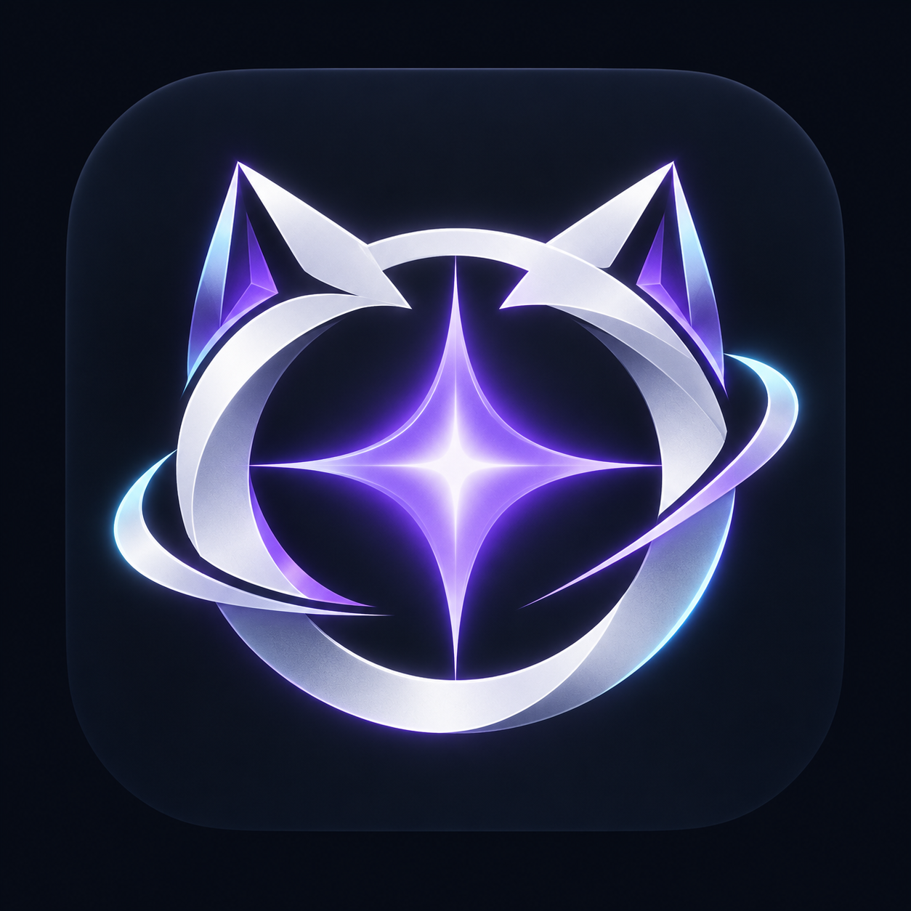

A · Geometric wolf
Distinct character identity. Faceted silver, violet focus and a strong silhouette.
Three app-icon directions in graphite, silver and violet. Generated visual explorations, awaiting selection. The installed icon and character have not changed.

Distinct character identity. Faceted silver, violet focus and a strong silhouette.

Retro terminal personality. Closest to the current pixel-pet appearance.

An abstract Agent presence. Fits the cyber habitat while welcoming different character packs.